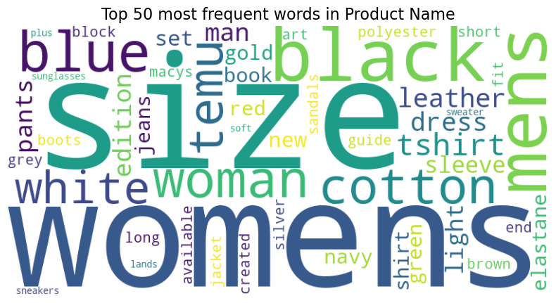
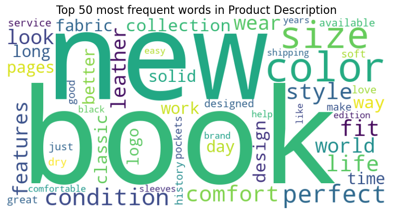

import os
import time
import pandas as pd
import pyarrow as pa
import pyarrow.parquet as pq
import nltk
from sklearn.feature_extraction.text import CountVectorizer
from wordcloud import WordCloud
import matplotlib.pyplot as plt
import re
from nltk.corpus import stopwordsWe aim to identify the minimum and maximum lengths of product names and descriptions, as well as explore the top 50 most frequent words in both columns. To begin, we will load the filtered dataset, which excludes products from non-English-language markets.
start = time.time()
df = pd.read_parquet("../../data/clean/clean_data.parquet", engine="pyarrow", columns=["Pid", "Description", "Name"])
print("Load time: {:.2f} seconds".format(time.time() - start))Load time: 220.40 secondsCheck the maximum and minimum length of product descriptions
max_description_length = df['Description'].dropna().str.len().max()
min_description_length = df['Description'].dropna().str.len().min()
print("The maximum description length is: ", max_description_length)
print("The minimum description length is: ", min_description_length)The maximum description length is: 6098
The minimum description length is: 1Check the maximum and minimum length of product names
max_name_length = df['Name'].dropna().str.len().max()
min_name_length = df['Name'].dropna().str.len().min()
print("The maximum name length is: ", max_name_length)
print("The minimum name length is: ", min_name_length)The maximum name length is: 205
The minimum name length is: 1Check the top 50 most frequent words in the product names and descriptions
def clean_text(text):
text = str(text).lower() # Convert to lowercase
text = re.sub(r'[^a-z\s]', '', text) # Remove non-alphabetical characters
return text
# Apply cleaning function to 'Name' and 'Description'
df['Name_clean'] = df['Name'].apply(clean_text)
df['Description_clean'] = df['Description'].apply(clean_text)# Function to get top n-grams
def get_top_ngrams(corpus, ngram_range=(1, 1), top_k=20):
vectorizer = CountVectorizer(ngram_range=ngram_range, stop_words='english')
X = vectorizer.fit_transform(corpus)
sum_words = X.sum(axis=0)
words_freq = [(word, sum_words[0, idx]) for word, idx in vectorizer.vocabulary_.items()]
words_freq = sorted(words_freq, key=lambda x: x[1], reverse=True)
return words_freq[:top_k]
# Plot word cloud
def plot_wordcloud(ngrams_freq, title):
wordcloud = WordCloud(width=800, height=400, background_color='white').generate_from_frequencies(dict(ngrams_freq))
plt.figure(figsize=(10, 5))
plt.imshow(wordcloud, interpolation="bilinear")
plt.axis("off")
plt.title(title, fontsize=16)
plt.show()# Analyze Name column
n = 50
name_ngrams = get_top_ngrams(df["Name_clean"], top_k = n)
print(f"The top {n} most frequent words in product name are: ", name_ngrams)
plot_wordcloud(name_ngrams, f"Top {n} most frequent words in Product Name")The top 50 most frequent words in product name are: [('size', np.int64(1422890)), ('womens', np.int64(1374478)), ('black', np.int64(1116106)), ('mens', np.int64(1062010)), ('blue', np.int64(609466)), ('woman', np.int64(527582)), ('cotton', np.int64(511787)), ('temu', np.int64(479243)), ('white', np.int64(466946)), ('tshirt', np.int64(384390)), ('leather', np.int64(377140)), ('dress', np.int64(367048)), ('man', np.int64(340307)), ('edition', np.int64(335097)), ('pants', np.int64(308583)), ('light', np.int64(298907)), ('sleeve', np.int64(284153)), ('set', np.int64(252700)), ('new', np.int64(240685)), ('book', np.int64(226954)), ('gold', np.int64(219845)), ('navy', np.int64(217004)), ('elastane', np.int64(216524)), ('red', np.int64(211633)), ('green', np.int64(210881)), ('jeans', np.int64(207582)), ('shirt', np.int64(204239)), ('polyester', np.int64(199407)), ('block', np.int64(198705)), ('guide', np.int64(191997)), ('macys', np.int64(190718)), ('grey', np.int64(186358)), ('brown', np.int64(184384)), ('long', np.int64(178362)), ('end', np.int64(170109)), ('boots', np.int64(164917)), ('created', np.int64(164413)), ('sandals', np.int64(164353)), ('art', np.int64(162555)), ('available', np.int64(161117)), ('fit', np.int64(161034)), ('jacket', np.int64(160326)), ('short', np.int64(159506)), ('silver', np.int64(155703)), ('sunglasses', np.int64(155500)), ('lands', np.int64(155351)), ('sneakers', np.int64(154924)), ('sweater', np.int64(153774)), ('soft', np.int64(150358)), ('plus', np.int64(149897))]
# Analyze Description column
desc_ngrams = get_top_ngrams(df["Description_clean"], top_k = n)
print(f"The top {n} most frequent words in product description are: ", desc_ngrams)
plot_wordcloud(desc_ngrams, f"Top {n} most frequent words in Product Description")The top 50 most frequent words in product description are: [('book', np.int64(2611938)), ('new', np.int64(2214532)), ('color', np.int64(1942544)), ('size', np.int64(1610374)), ('perfect', np.int64(1281294)), ('condition', np.int64(1163154)), ('style', np.int64(1079744)), ('comfort', np.int64(1015994)), ('fit', np.int64(1008145)), ('life', np.int64(1007781)), ('world', np.int64(847360)), ('features', np.int64(847250)), ('wear', np.int64(845759)), ('look', np.int64(829948)), ('leather', np.int64(827391)), ('collection', np.int64(810492)), ('way', np.int64(808006)), ('design', np.int64(796201)), ('classic', np.int64(760775)), ('solid', np.int64(727720)), ('pages', np.int64(720195)), ('fabric', np.int64(709580)), ('long', np.int64(705084)), ('work', np.int64(702714)), ('time', np.int64(690371)), ('better', np.int64(689978)), ('day', np.int64(679374)), ('logo', np.int64(650608)), ('designed', np.int64(631882)), ('make', np.int64(622795)), ('service', np.int64(622636)), ('history', np.int64(619193)), ('love', np.int64(605760)), ('just', np.int64(599608)), ('great', np.int64(595963)), ('pockets', np.int64(593372)), ('dry', np.int64(588518)), ('soft', np.int64(587918)), ('available', np.int64(587132)), ('good', np.int64(583183)), ('shipping', np.int64(579069)), ('brand', np.int64(564281)), ('like', np.int64(562062)), ('black', np.int64(554823)), ('edition', np.int64(550245)), ('years', np.int64(549389)), ('help', np.int64(541590)), ('comfortable', np.int64(535234)), ('easy', np.int64(533261)), ('sleeves', np.int64(523448))]